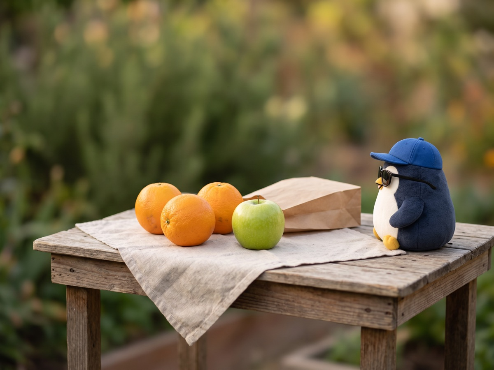

The answer is in the market 🍊

Recently, I heard a phrase, and I thought it was good.
"The answer is in the market."
My favorite YouTuber reached 100,000 channel subscribers recently.
In that celebration video, what they talked about was this phrase.
The right answer is not in your own head, but in the market.
So it means, "Look at the opinions of your customers and the people who read you, and look at what they do."
For a long time, I was thinking only in my head about what plan I should use to make this blog.
But just thinking does not give me an answer.
This blog is my platform, so I will also make free spaces, like "I am still thinking about it now, and I do not have the answer yet."
If I share information from now on, I want to always keep this phrase in mind.
The answer is in the market. 🍊